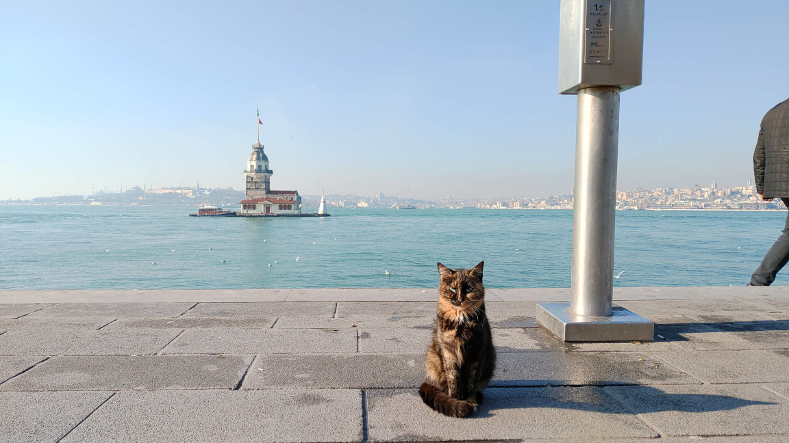

👉 English

Blog di Viaggi

Storie, non guide.
Oltre a quella della scrittura, come tanti ho la passione per i viaggi. Recentemente ho aperto un blog di viaggi, più o meno.
Sì, perché in realtà non scrivo mai le classiche guide di viaggio. Giuro di averci anche provato, ma non è esattamente nel mio stile. 😇
Andando per tentativi, credo di aver dopo qualche mese trovato la mia nicchia. Scrivo principalmente racconti di viaggio, arricchendoli con le mie riflessioni. Sì, lo so, non riesco a tenere a bada l'animo da scrittore, me ne rendo conto.

Gli articoli con l'immagine arrotondata fanno parte della collezione "Echi di Tastiera" e sono maggiormente riflessivi.
Bolivia


Corea del Sud

Egitto
Giappone


Hong Kong

India

Italia


Laos

Macedonia del Nord

Malesia

Maldive

Marocco

Portogallo

Slovenia

Sri Lanka

Taiwan


Turchia

Ucraina

Viaggi Trasversali